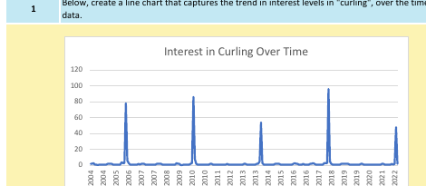
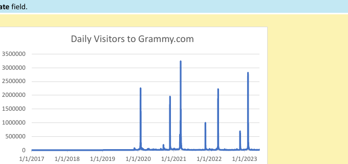

InternshipExcel
Winter Sports Interest Analysis
The Global Career Accelerator · Excel, ChatGPT-assisted analysis
Analyzed 18 years of search-interest data across nine winter sports. Built line and bar charts showing that interest in sports like curling, luge, and bobsleigh spikes sharply every four years — almost entirely during the Winter Olympics — then used ChatGPT to test and refine that hypothesis against the data.
Reflection: This was a good exercise in not trusting my first chart. My initial takeaway was obvious ("Olympics cause spikes"), but narrowing the ChatGPT prompt to specific months and years is what actually produced a sourced, defensible explanation instead of a guess.

InternshipExcel
Analyzing Website Performance for The Grammys
The Global Career Accelerator · Excel, XLOOKUP, business memo
Evaluated whether splitting Grammy.com into two separate sites (Grammys vs. The Recording Academy) in 2022 helped or hurt user engagement. Calculated bounce rate, pages per session, and mobile traffic share before and after the split, found the Grammy Awards show night draws roughly 854,000 more visitors than a typical day, and wrote a business memo recommending the sites stay separate while improving cross-site navigation.
Reflection: The most useful part of this project was catching where ChatGPT's first-draft memo overgeneralized — it stated conclusions more confidently than the underlying numbers actually supported, which pushed me to tie every claim in my final memo back to a specific calculated metric.
InternshipExcel · PivotTables
DoorDash Delivery Analysis
The Global Career Accelerator · Excel PivotTables
Built PivotTables across ~50,000 DoorDash orders spanning five markets to compare delivery time, order volume, and price. Found delivery times average 49.9 minutes (with a 21.6 minute standard deviation), identified American cuisine as the most-ordered category nationally, and delivered three market-specific recommendations for driver incentives and restaurant partnerships.
Reflection: Grouping by market region first, then by cuisine, made regional differences in delivery time and order value much clearer than looking at either factor alone — a reminder that the order you slice data in changes what patterns you actually notice.
InternshipExcel · XLOOKUP
Terracotta Survey Analysis
The Global Career Accelerator · Excel, XLOOKUP, PivotTables
Analyzed customer survey data for a plant retailer to figure out what drives purchase decisions. Used XLOOKUP to join survey responses to a plant-care reference table, then PivotTables to find that low-maintenance plants make up 99.5% of purchases and "care requirements" is the top-cited reason customers buy — insights that shaped a recommendation for how the client should market low-maintenance plants on their homepage.
Reflection: This project made the case for XLOOKUP over VLOOKUP very concrete for me — being able to look left in the data instead of only right saved restructuring three separate reference tables.
InternshipExcel · Statistics
A/B Testing: H&M Email Campaign
The Global Career Accelerator · Sample size calculation, hypothesis testing
Designed and evaluated an A/B test comparing two promotional email subject lines for H&M. Calculated the minimum required sample size, then tested the results: the new subject line lifted open rate from 17.55% to 19.13%, a statistically significant difference (p ≈ 0.047) — enough to recommend adopting it, while flagging the Type I error risk and the need to confirm the lift shows up in downstream clicks and conversions, not just opens.
Reflection: Distinguishing "statistically significant" from "practically significant" was the real lesson here — a p-value under 0.05 tells you the difference probably isn't random, not that it's necessarily large enough to matter for revenue.
InternshipExcel
BART Ridership Analysis
The Global Career Accelerator · Excel feature engineering
Engineered features (day-of-week, transit line classification) from a raw 2021 BART ridership dataset, then calculated key ridership metrics. Found that 83% of the system's ~24.6 million annual riders traveled on weekdays and that the Yellow Line carries the large majority of riders — evidence used to recommend BART shift train frequency toward weekday peak hours.
Reflection: Extracting day-of-week and line classification from messy text fields before I could even start on the "real" analysis was a good reminder of how much of data analysis is cleanup, not math.
InternshipSQL
Analyzing Startup Investments
The Global Career Accelerator · SQL, Crunchbase dataset
Wrote SQL queries against a 27,000+ row Crunchbase dataset to rank startups by total funding and by outcome. Found that Clearwire raised 5.7x more funding than the twelfth-highest funded company, and that cleantech startups — despite showing up disproportionately among the most-funded companies that later closed — actually close at a slightly lower rate (7%) than the dataset average (7.9%).
Reflection: I expected cleantech to be riskier than the data actually showed — a good example of how a vivid pattern ("famous failed cleantech startups") can feel statistically significant when it isn't, and why I always check the base rate before drawing a conclusion.
InternshipSQL + Excel
YouTube Trending Analysis
The Global Career Accelerator · SQL and Excel, same dataset
Analyzed the same dataset of 6,351 US trending YouTube videos (Nov 2017–Jun 2018) two ways. In Excel, explored column types and category-level view averages. In SQL, wrote ranking queries with ORDER BY, LIMIT, and OFFSET to find the most-liked, most-disliked, and most-commented videos, then compared how quickly engagement drops off between the 10th, 100th, and 1000th ranked videos.
Reflection: Doing the same dataset in both tools back-to-back made the trade-off clear: Excel's PivotTables were faster for category-level summaries, but SQL's OFFSET made it much easier to jump to an arbitrary rank in a 6,000-row dataset without scrolling.
InternshipSQL
London Transit Analysis
The Global Career Accelerator · SQL, Transport for London data
Description: Used SQL on Transport for London's Rolling Origin and Destination Survey (6,295 rows) to summarize typical weekday Underground ridership by zone, time of day, trip purpose, and distance. My main finding was a data gap: 706,097 journeys have no recorded purpose, and 204,883 of them fall in the 5–7 am Early period, about 97% of all travel in that window. I recommended TfL investigate why survey responses drop before 7 am so early-morning and late-night service decisions can be based on real purpose data.
InternshipSQL
NBA Performance Analysis
The Global Career Accelerator · SQL, ChatGPT-assisted analysis
Description: Queried 23,335 NBA games from the 2004 to 2020 seasons to see how 3-point shooting relates to team success. Teams with a high 3-point rate almost always had winning records (92%), and all 7 teams shooting 34% or lower had losing records. I noted that this shows correlation rather than causation and recommended looking at defensive rating, rebounding, and turnovers for a fuller picture.
InternshipSQL · Joins
FastKitchen Customer Analysis
The Global Career Accelerator · SQL outer joins
Description: Joined orders to registered-user data with a LEFT JOIN so guest orders were not dropped. Average order total was $22.22, Allen had the most registered users (212, spread across three zip codes), and three zip codes spend more per order than guests. To convert guests into registered users I suggested a "save your info" option on the order confirmation page, which avoids adding friction at checkout.
InternshipSQL · Portfolio Project
Sustainability Impact Analysis for Intel
The Global Career Accelerator · SQL, joined datasets
Description: Joined Intel's device and impact datasets to evaluate which repurposed devices deliver the most energy and CO₂ savings (the data is hypothetical and built for the program). Region mattered much more than device type: laptops and desktops save nearly the same per device, but devices in Asia save about 15 kg of CO₂ per year versus about 10 kg in North America and 6 kg in Europe. I recommended prioritizing by region first and outlined cost-per-ton and energy-per-dollar metrics to balance sustainability with cost.
InternshipTableau
Forbes Highest-Paid Celebrities
The Global Career Accelerator · Tableau
Dashboard exploring Forbes' highest-paid actors dataset — earnings over time, a breakdown of earnings by gender, and a ranked view of the highest-paid actors year over year.
InternshipTableau
UFO Sightings Dashboard
The Global Career Accelerator · Tableau
Geographic and temporal breakdown of reported UFO sightings — by country and state, by hour of day, by shape reported, and by how encounter length varies across the year.
InternshipTableau
Super Bowl Analysis
The Global Career Accelerator · Tableau
Dashboard comparing Super Bowl ad cost trends over time against TV ratings, and looking at how final score margins relate to viewership.
InternshipTableau
NYC Green Taxi Fares
The Global Career Accelerator · Tableau
Dashboard analyzing 2015 NYC Green Taxi trip data — fare distribution, tip amount, and trip distance, all broken out by rate type.
InternshipTableau
Intel Data Center Location Analysis
The Global Career Accelerator · Tableau
Dashboard evaluating regional power grids as candidate sites for a new data center — comparing energy source mix, renewable energy share, and how supply and demand shift hour-by-hour across a 24-hour period in each region.
Class ProjectReconnaissance
Reconnaissance & Footprinting Lab: Home Depot
CIS4204 Ethical Hacking · passive reconnaissance
Description: Used only passive, publicly available sources (nslookup, ARIN WHOIS, DomainTools, SEC filings, and robots.txt) to profile The Home Depot without touching its systems. The site's IP address (35.201.95.83) turned out to be registered to Google Cloud rather than Home Depot, and 123 other websites share it. The robots.txt file also revealed disallowed paths and a sitemap, which shows how much an attacker can learn before ever sending a packet.
Class ProjectNmap
Scanning & Enumeration Lab (Nmap)
CIS4204 Ethical Hacking · Kali Linux, Nmap
Description: Ran 17 Nmap scans (ping sweeps, SYN, TCP connect, UDP, OS detection, version detection, and aggressive scans) from a Kali VM against two intentionally vulnerable machines in my own private VirtualBox lab. The scans identified the operating systems and service versions on each target and found a browsable web directory exposing phpmyadmin and a payroll app file, all without credentials. No scans were directed outside my private lab network.
Class ProjectThreat Modeling
Threat Modeling My Personal Computer
Security lab · Lab 04
Description: Applied the seven-step threat modeling process (assets, threat actors, attack vectors, risk, and mitigations) to my own Windows desktop. Password reuse came out as my biggest risk and a password manager as the simplest fix. Public Wi-Fi use was a moderate risk addressed with a VPN, and phishing and malware rated medium because of habits I already follow.
Class ProjectPassword Cracking
Windows Password Cracking: LCP & Ophcrack
Security lab · Lab 5
Description: Recovered the account passwords from a sample Windows SAM database using a brute-force attack in LCP and a rainbow-table attack in Ophcrack. Every account that had a password was cracked, and I verified each one against the LM and NT hashes. The report explains why legacy LM hashes fall so quickly and why MFA and zero trust matter for defense.
Class ProjectPolicy
AI-Driven Surveillance Pricing Policy Paper
Information Policy · legislative tracing
Description: A policy paper on companies using consumer data and AI to set individualized prices. I traced the Stop Price Gouging in Grocery Stores Act of 2026 (S. 3892) and the Senate Judiciary hearing "Your Data, Their Profit." What stood out to me is how this issue connects privacy to money: personal data is not only at risk of theft, it can directly change what someone pays.
Class ProjectProject Management
Software Database Project Plan
Coursework · case study plan
Description: A project plan for a centralized software and license tracking database at a fictional university, written from the project leader's point of view. It follows the six-phase model from Baars (2006) over roughly 26 weeks, with a decision point at the end of each phase, clear scope boundaries, and a piloted rollout before handover.
Class ProjectReflection
"Why Privacy Matters" Event Report
Coursework · virtual event report
Description: A report on Glenn Greenwald's TED Talk "Why Privacy Matters," which I watched on October 2, 2026. His argument is that everyone values privacy and that being watched makes people conform. I connected it to my cloud security goals: least privilege, limited log access, and short data retention are ethical responsibilities as well as technical ones.
Class ProjectReflection
BSIS Program Review
Coursework · program reflection
Description: A reflection on my path through the BSIS program after transferring from Pasco-Hernando State College. It covers the courses that shaped me most (Networking and Communications, Architecting Operating Systems, and the policy classes), my most significant assignments, and the Google Cybersecurity Professional Certificate I earned for my Information Security Management self-development project.